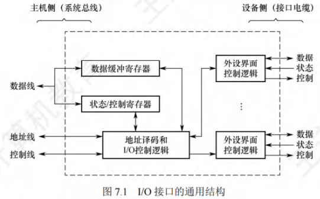
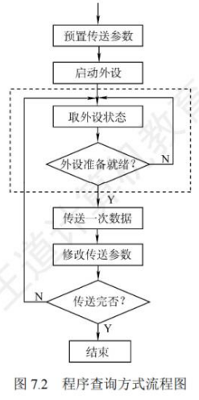
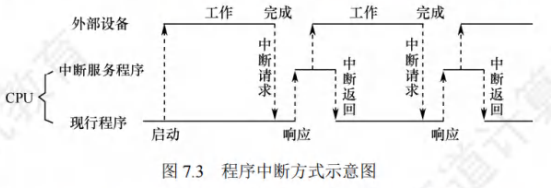
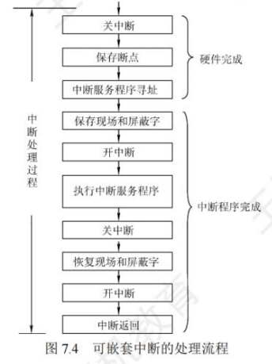
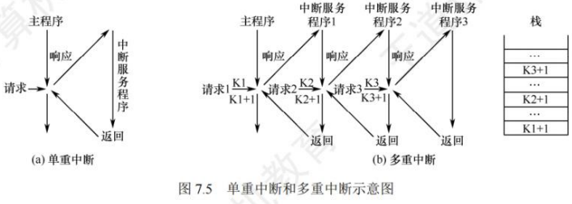
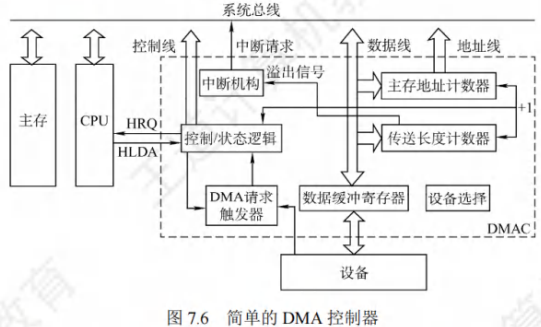
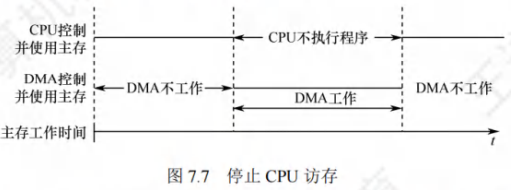
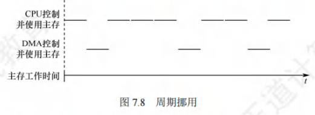
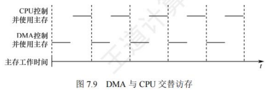
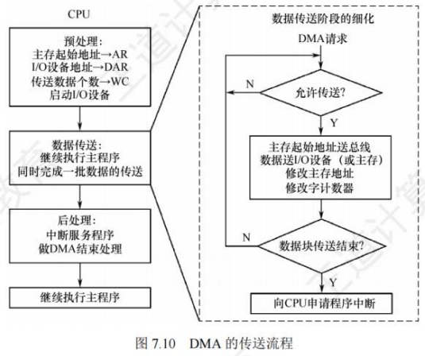

输入/输出系统
[toc]
I/O系统基本概念（考纲中删除）
输入/输出系统概述
输入/输出是以主机为中心的操作：将信息从外部设备传送到主机称为输入，反之称为输出。输入/输出系统的核心功能是对各类信息的输入输出过程进行控制。
I/O系统核心概念
- 外部设备：包括输入设备、输出设备及需通过接口访问的外存储设备
- 接口：协调外设与主机数据传输的逻辑部件，负责速度匹配、电平和格式转换等
- 输入设备：向计算机系统输入命令、文本、数据等信息的部件（如键盘、鼠标）
- 输出设备：将计算机系统信息输出到外部的部件（如显示器、打印机）
- 外存设备：除内存及CPU缓存外的存储器（如硬盘、光盘等）
I/O系统组成
- I/O软件：包括驱动程序、用户程序、管理程序及升级补丁等，通过I/O指令和通道指令实现CPU与I/O设备的信息交换
- I/O硬件：由外部设备、设备控制器、接口及I/O总线组成，通过设备控制器控制I/O设备动作，通过I/O接口与主机（总线）连接
外部设备分类及特性
输入设备
- 键盘：最常用的输入设备，用于发送命令或输入数据
- 鼠标：常用定位输入设备，建立用户操作与屏幕位置的关联
输出设备
显示器
按显示器件可分为阴极射线管(CRT)显示器、液晶显示器(LCD)、发光二极管(LED)显示器等，属于点阵式设备，主要参数包括：
- 屏幕大小：以对角线长度表示（单位：英寸），常见规格12.2~32英寸
- 分辨率：屏幕像素总数，以"宽×高"表示（如800×600、1024×768）
- 灰度级：像素的亮暗/颜色差异级别，级别越多图像越逼真（典型：8位=256级、16位等）
- 刷新：为维持显示效果，需在光点消失前重新扫描显示的过程
- 刷新频率：单位时间内扫描全屏的次数（>30Hz无闪烁感，通常60~120Hz）
- 显示存储器(VRAM)：存储一帧图像信息的专用存储器
- 容量计算公式：分辨率 × 灰度级位数
- 带宽计算公式：分辨率 × 灰度级位数 × 帧频
打印机
用于将处理结果输出到介质上，按工作方式分类：
- 针式打印机：擅长多层复写打印，适用于票据/蜡纸打印；成本低、耗材便宜，但分辨率和速度有限
- 喷墨式打印机：基于三基色原理，通过混合三种颜色墨滴实现彩色打印，可提供高质量彩色输出
- 激光打印机：结合激光技术与电子显像技术，通过激光束形成潜像，经显影、转印和定影完成打印；具有高质量、高速度、强处理能力的特点
外部存储器（辅存）
- 磁表面存储器：将磁性材料涂覆在金属铝或塑料表面作为载磁体（如磁盘、磁带、磁鼓存储器）
- 固态硬盘(SSD)：采用高性能Flash存储器作为存储介质的"硬盘"，需配套硬件和软件支持，常见于高档笔记本电脑
- 光盘存储器：利用光学原理读写信息的存储装置，通过聚焦激光束非接触式记录信息，系统由光盘片、驱动器和控制器组成
I/O控制方式
在数据传输过程中，主要有四种基本控制方式：
-
程序查询方式
由CPU通过程序持续查询I/O设备是否就绪，进而控制设备与主机的信息交换 -
程序中断方式
仅在I/O设备准备就绪并向CPU发出中断请求时才进行响应 -
DMA方式
主存与I/O设备间存在直接数据通路，信息交换时无需调用中断服务程序 -
通道方式
系统设有通道控制部件，每个通道挂接若干外设；主机执行I/O命令时只需启动相关通道，由通道执行通道程序完成I/O操作
应用场景：
- 程序查询方式和程序中断方式适用于数据传输速率较低的外部设备
- DMA方式和通道方式适用于数据传输速率较高的设备
I/O接口
I/O接口（也称I/O控制器）是主机与外设之间的交接界面，通过接口可实现主机与外设之间的信息交换。由于外设种类繁多，在工作方式、数据格式和工作速度等方面存在显著差异，接口的作用正是解决这些差异带来的适配问题。
I/O接口的功能
I/O接口的主要功能如下：
- 地址译码与设备选择：CPU发送外设选择地址码后，接口对地址进行译码并产生设备选择信号，确保主机能与指定外设进行信息交换。
- 通信联络控制：协调主机与外设的时序配合，解决不同工作速度的设备间的数据交换问题，保证计算机系统统一协调工作。
- 数据缓冲：因CPU与外设速度往往不匹配，接口需设置数据缓冲寄存器暂存数据，避免因速度差异导致数据丢失。
- 信号格式转换：处理主机与外设间可能存在的电平、数据格式差异，提供电平转换、并/串或串/并转换、模/数或数/模转换等功能。
- 控制命令与状态信息传送：
- CPU通过接口中的命令寄存器向外设发送启动等控制命令
- 外设准备就绪时，将"准备好"状态信息存入接口状态寄存器并反馈给CPU
- 外设提出中断请求时，CPU通过接口向其反馈响应信号
I/O接口的基本结构
图7.1展示了I/O接口的通用结构，接口在主机侧通过I/O总线与内存、CPU相连。其核心组成包括：
- 数据缓冲寄存器：暂存与CPU或内存之间传送的数据信息
- 状态寄存器：记录接口和设备的状态信息
- 控制寄存器：保存CPU对外设的控制信息
（注：状态寄存器和控制寄存器因传送方向相反且访问时间错开，可合并设计）

接口中的信号线路功能
- 数据线：传送读/写数据、状态信息、控制信息和中断类型号
- 地址线：传送要访问的接口寄存器地址
- 控制线：传送读/写控制信号（区分读写操作）、中断请求与响应信号、仲裁信号和握手信号
I/O控制逻辑的主要作用
- 对控制寄存器中的命令字进行译码
- 将译码后的控制信号通过外设界面控制逻辑发送到外设
- 控制数据在数据缓冲寄存器与外设之间的双向传输
- 收集外设状态并更新到状态寄存器
对上述寄存器的访问需通过专门的I/O指令完成，这类指令属于特权指令，仅在操作系统内核的底层I/O软件中使用。
I/O接口的类型
从不同角度可将I/O接口分为以下类型：
-
按数据传送方式（外设与接口侧）：
- 并行接口：一字节或一个字的所有位同时传送
- 串行接口：数据位一位一位有序传送（需完成数据格式转换）
-
按主机访问控制方式：
- 程序查询接口
- 中断接口
- DMA接口等
-
按功能灵活性：
- 可编程接口：通过编程可改变接口功能
- 不可编程接口：功能固定，无法通过编程修改
I/O端口及其编址
端口的基本概念
I/O端口是指I/O接口电路中可被CPU直接访问的寄存器，主要包括：
- 数据端口：CPU可进行读/写操作
- 状态端口：仅可读取外设状态信息
- 控制端口：仅可写入控制命令
注意：端口与接口是不同概念，端口特指接口电路中可进行读/写操作的寄存器。
端口编址方式
I/O端口需通过编址实现CPU访问，每个端口对应唯一的端口地址，主要有两种编址方式：
独立编址（I/O映射方式）
- 特点：对所有I/O端口单独编址，形成与主存地址空间独立的地址空间（地址可重叠）
- 访问方式：需使用专门的I/O指令，通过地址码指定I/O端口号
- 优点：
- 端口地址位数少，译码简单，寻址速度快
- 专用I/O指令使程序清晰，便于理解和检查
- 缺点：
- I/O指令功能简单，程序设计灵活性较差
- 需要存储器读写和I/O设备读写两组控制信号，增加控制复杂性
统一编址（存储器映射方式）
- 特点：从主存地址空间中划分部分地址给I/O端口，端口与主存单元位于同一地址空间的不同分段
- 访问方式：无需专用I/O指令，通过统一的访存指令访问端口（根据地址范围区分访问对象）
- 优点：
- 访问操作灵活方便，端口编址空间较大
- 可利用虚拟存储管理系统实现I/O访问保护
- 缺点：
- 端口地址占用主存空间，减少了主存可用容量
- 需全部地址线参与译码，增加电路复杂性，降低译码速度
I/O接口(也称I/O控制器)是主机和外设之间的交接界面,通过接口可以实现主机和外设
之间的信息交换。外设种类繁多,且具有不同的工作特性,它们在工作方式、数据格式和工作速
度等方面有着很大的差异,接口正是为了解决这些差异而设置的的。
I/O方式
输入/输出系统实现主机与I/O设备之间的数据传送时，可采用不同的控制方式。各类方式在代价、性能、解决问题的侧重点等方面存在差异，常用的I/O方式包括程序查询、程序中断和DMA等，其中前两种方式更依赖CPU执行程序指令来完成控制。
程序查询方式
程序查询方式通过CPU直接执行程序实现主机与外设的信息交换。在该方式的接口中，需设置数据缓冲寄存器（数据端口） 和设备状态寄存器（状态端口） 。主机执行I/O操作时，先读取设备状态，再根据状态决定下一步是进行数据传送还是继续等待。
程序查询方式的工作流程
- CPU执行初始化程序，预置数据传送的相关参数（如传送地址、传送长度等）。
- 向I/O接口发送命令字，启动I/O设备。
- 从外设接口读取设备状态信息。
- CPU通过持续查询或定时查询，判断外设是否准备就绪（未就绪则重复步骤3）。
- 外设就绪后，完成一次数据传送。
- 修改内存地址和传送计数器的参数（地址递增、计数器递减）。
- 判断数据传送是否结束（计数器为0则结束，否则返回步骤3重复执行）。

程序查询方式的分类
根据步骤4中“查询设备状态”的方式不同，可分为两类：
- 独占查询：设备启动后，CPU持续查询接口状态，100%的时间用于I/O操作，此时CPU与外设完全串行工作，CPU利用率极低。
- 定时查询：CPU按固定周期周期性查询接口状态，仅在条件满足时进行一次数据传送，传送完成后返回用户程序。查询周期需与外设的数据传输速率匹配（速率越高，周期需越短）。
题目：假设计算机主频为500MHz，CPI（每条指令的平均时钟周期数）为4，某外设的数据率为2MB/s，I/O接口中有一个32位数据缓冲寄存器，采用定时查询方式，每次I/O需执行10条指令。求：
- 外设最多间隔多长时间查询一次才能不丢失数据？
- CPU用于该外设I/O的时间占CPU总时间的百分比至少是多少？
解：
-
查询间隔计算：
32位数据对应4B，外设准备4B数据的时间 = 数据量 ÷ 数据率 = 4B ÷ 2MB/s = 2μs。
为避免数据丢失，需在外设准备好数据后立即读取，因此最多间隔2μs查询一次。 -
CPU时间占比计算：
每秒查询次数 = 1s ÷ 2μs = 5×10⁵次。
每次查询执行10条指令，每秒总指令数 = 5×10⁵次 × 10条/次 = 5×10⁶条。
每秒CPU用于I/O的时钟周期数 = 总指令数 × CPI = 5×10⁶ × 4 = 2×10⁷个。
CPU总时钟周期数（每秒）= 主频 = 500MHz = 5×10⁸个。
时间占比 = （I/O时钟周期数 ÷ 总时钟周期数）× 100% = （2×10⁷ ÷ 5×10⁸）× 100% = 4%。
程序查询方式的优缺点
- 优点：设计简单，所需硬件数量少（仅需基础寄存器和逻辑电路）。
- 缺点：CPU需花费大量时间查询和等待，一段时间内只能与一台外设交换信息，CPU与外设串行工作，整体效率极低。
程序中断方式
程序中断的基本概念
程序中断是指：计算机执行程序过程中，若出现急需处理的异常情况或特殊请求，CPU会暂时中止现行程序，转去处理这些请求/异常，处理完毕后再返回原程序断点继续执行。
早期中断技术仅用于数据传送，随着计算机发展，其功能不断扩展，核心作用包括：
- 实现CPU与I/O设备的并行工作。
- 处理硬件故障（如内存错误）和软件错误（如除零异常）。
- 实现人机交互（如用户按快捷键干预程序）。
- 支持多道程序、分时操作（程序切换依赖中断）。
- 满足实时处理需求（快速响应外部事件）。
- 实现应用程序与操作系统（管态程序）的切换（软中断）。
- 多处理器系统中，实现处理器间的信息交流和任务切换。
程序中断方式的核心思想：
CPU启动外设后，无需持续等待（区别于查询方式），而是继续执行现行程序；当外设完成数据传送准备后，主动向CPU发出中断请求；CPU在允许响应的条件下，暂停现行程序，转去执行中断服务程序（完成一次数据传送），服务结束后返回原程序，此时CPU与外设恢复并行工作（流程对应图7.3）。

题目：假设计算机主频为500MHz，CPI为4，某外设的数据率为40MB/s，I/O接口中有一个32位数据缓冲寄存器。在中断I/O方式下，每次中断响应和中断处理的总时钟周期数至少为400，判断该外设能否采用中断I/O方式，并说明原因。
解：
-
中断处理时间计算：
中断响应+处理的总时钟周期数为400，对应时间 = 400 ×（1÷500MHz）= 0.8μs。 -
外设准备数据时间计算：
32位数据对应4B，准备时间 = 4B ÷ 40MB/s = 0.1μs。 -
结论：
外设准备数据的时间（0.1μs）小于中断处理时间（0.8μs），意味着外设准备好数据后，CPU尚未完成上一次中断处理，新数据会被覆盖丢失，因此该外设不适合采用中断I/O方式。
程序中断的工作流程
程序中断的完整流程分为中断请求、中断响应判优、CPU响应条件、中断响应过程、中断向量识别、中断处理6个阶段，具体如下：
（1）中断请求
- 中断源：请求CPU中断的设备或事件（如I/O设备就绪、硬件故障等），一台计算机可存在多个中断源。
- 中断请求标记：为每个中断源设置“中断请求标记触发器”（1表示有请求，0表示无请求），多个触发器组成“中断请求标记寄存器”（可集中在CPU或分散在各中断源中）。
- 中断请求线：
- INTR线：传送“可屏蔽中断”请求，优先级最低，CPU可通过“关中断”屏蔽该类请求。
- NMI线：传送“不可屏蔽中断”请求，用于处理紧急事件（如时钟中断、电源掉电），优先级最高，即使“关中断”也会被响应。
（2）中断响应判优
当多个中断源同时发出请求时，需通过“中断判优逻辑”确定响应顺序，即中断响应优先级。判优通常由硬件排队器或软件查询程序实现，优先级规则如下（从高到低）：
- 不可屏蔽中断 > 内部异常（如除零、内存错误）> 可屏蔽中断；
- 内部异常中：硬件故障 > 软件中断；
- DMA中断请求 > I/O设备中断请求；
- I/O设备中：高速设备 > 低速设备、输入设备 > 输出设备、实时设备 > 普通设备。
注意：中断优先级分为“响应优先级”和“处理优先级”：
- 响应优先级：由硬件/查询程序固定决定，不可动态修改；
- 处理优先级：可通过“中断屏蔽技术”动态调整，实现“多重中断”（高优先级中断打断低优先级中断服务）。
（3）CPU响应中断的条件
CPU需同时满足以下3个条件才能响应中断（异常和不可屏蔽中断不受条件2、3限制）：
- 中断源有有效的中断请求（请求标记为1）；
- CPU处于“开中断”状态（可通过指令设置，屏蔽可屏蔽中断）；
- 当前指令执行完毕（确保原程序执行的完整性），且无更紧迫的任务（如DMA请求）。
补充：CPU仅在“每条指令执行结束时”采样中断请求信号（开中断状态下），因此I/O中断的响应时机固定为指令执行阶段结束时。
（4）中断响应过程
CPU响应中断后，会自动执行一系列硬件操作（称为中断隐指令，非指令系统中的真实指令），具体操作如下：
- 关中断：保护断点和现场时，禁止响应其他中断，避免信息丢失；
- 保存断点：将原程序的断点信息（PC值和PSW状态字）保存到栈或特定寄存器中，确保后续能返回原程序；
- 异常的断点：当前指令地址（因异常指令未执行成功，需重新执行）；
- 中断的断点：下一条指令地址（原指令已执行完毕）；
- 引出中断服务程序：识别中断源，将对应的中断服务程序入口地址送入PC。
（5）中断向量
中断源的识别分为“向量中断”和“非向量中断”，常用向量中断（硬件识别）：
- 中断向量：每个中断源对应唯一的“中断类型号”，每个类型号对应一个中断服务程序的入口地址（即中断向量）；
- 中断向量表：将系统中所有中断向量集中存放在内存的固定区域，形成中断向量表；
- 向量中断流程：CPU获取中断类型号 → 计算中断向量在表中的地址 → 取出入口地址送入PC → 转去执行中断服务程序。
补充：中断类型号通过I/O总线的数据线传送，CPU响应中断后从数据线读取该编号。
（6）中断处理过程
中断处理流程（对应图7.4）由“中断隐指令”（硬件）和“中断服务程序”（软件）共同完成，具体步骤如下：
- 关中断（硬件自动，中断隐指令）；
- 保存断点（硬件自动，中断隐指令）；
- 中断服务程序寻址（硬件自动，中断隐指令）；
- 保存现场和屏蔽字（软件实现，将用户工作寄存器内容、当前屏蔽字存入栈，避免被服务程序破坏）；
- 开中断（软件实现，允许响应更高优先级中断，支持多重中断）；
- 执行中断服务程序（核心步骤，完成数据传送或异常处理）；
- 关中断（软件实现，避免恢复现场时被中断）；
- 恢复现场和屏蔽字（软件实现，从栈中恢复步骤4保存的信息）；
- 开中断、中断返回（软件实现，执行“中断返回指令”，从栈中取出断点信息，返回原程序）。
注意：若为“单重中断”（不支持嵌套），需删除步骤5（开中断）和步骤7（关中断）。

多重中断和中断屏蔽技术
多重中断的定义
- 单重中断：CPU执行中断服务程序时，不响应新的中断请求（即使优先级更高），如图7.5(a)；
- 多重中断（中断嵌套）：CPU执行低优先级中断服务程序时，可响应更高优先级的中断请求，暂停当前服务程序转去处理新请求，处理完毕后返回原服务程序，如图7.5(b)。

多重中断的示例流程：
主程序执行时收到中断请求1 → 保存主程序断点，执行服务程序1 → 服务程序1中收到更高优先级的请求2 → 保存服务程序1断点，执行服务程序2 → 服务程序2中收到更高优先级的请求3 → 保存服务程序2断点，执行服务程序3 → 服务程序3结束，返回服务程序2断点 → 服务程序2结束，返回服务程序1断点 → 服务程序1结束，返回主程序断点。
多重中断的实现条件：
- 中断服务程序中需提前设置“开中断”指令；
- 高优先级中断源有权中断低优先级中断源。
中断屏蔽技术
中断屏蔽技术用于动态调整中断处理优先级（使处理优先级可不同于响应优先级），核心是“屏蔽字”：
- 屏蔽触发器（MASK）：每个中断源对应一个屏蔽触发器（1表示屏蔽该中断，0表示允许请求）；
- 屏蔽字寄存器：所有屏蔽触发器的集合，其内容称为“屏蔽字”；
- 原理：通过设置屏蔽字，可屏蔽低优先级中断请求，或临时提升某中断源的处理优先级。
题目：某计算机有4个中断源A、B、C、D，硬件排队优先级为A>B>C>D，要求将中断处理次序改为D>A>C>B，写出每个中断源对应的屏蔽字。
解：
屏蔽字的规则：某中断源的屏蔽字中，“1”表示屏蔽对应中断源，“0”表示允许；高优先级中断需屏蔽所有低优先级中断，且不屏蔽自身。
- D（最高处理优先级）：需屏蔽A、B、C、D → 屏蔽字为1111；
- A（次高）：仅允许被D中断，需屏蔽A、B、C → 屏蔽字为1110；
- C（第三）：允许被D、A中断，需屏蔽B、C → 屏蔽字为1010；
- B（最低）：允许被D、A、C中断，仅屏蔽B → 屏蔽字为1001。
最终屏蔽字表如下：
| 中断源 | 屏蔽字（D A C B） |
|---|---|
| D | 1 1 1 1 |
| A | 1 1 1 0 |
| C | 1 0 1 0 |
| B | 1 0 0 1 |
程序中断方式的优缺点
- 优点：克服了程序查询方式中CPU等待的问题，实现CPU与外设并行工作，提高CPU利用率。
- 缺点：CPU处理中断时需暂停原程序，执行中断服务程序（含保护/恢复现场）；对于高速设备的成批数据传送，频繁中断会显著占用CPU资源，影响系统效率。
DMA方式
DMA（Direct Memory Access，直接存储器存取）方式是完全由硬件控制的成组数据传送方式，核心是在“主存与外设之间开辟直接数据通路”，数据传送不经过CPU，仅在“预处理”和“后处理”阶段需要CPU介入。
该方式适用于磁盘、显卡、声卡、网卡等高速设备的大批量数据传送，硬件开销较大（需专用DMA控制器），中断仅用于处理“传送故障”和“传送结束”。
DMA方式的特点
- 主存与DMA接口间有直接数据通路，数据传送不经过CPU，无需中断现行程序；
- 主存可同时被CPU和外设访问（需协调访存冲突）；
- 数据块传送时，主存地址的修改、传送长度的计数等由硬件电路自动完成；
- 主存中需开辟专用缓冲区，用于暂存外设的输入/输出数据；
- 传送速度快，CPU与外设并行工作，系统效率高；
- 传送前需CPU进行“预处理”（初始化DMA控制器），传送后需CPU进行“后处理”（中断处理）。
DMA控制器的组成
DMA控制器（DMA接口）是控制DMA传送的核心硬件，其功能包括：接受外设DMA请求、向CPU申请总线控制权、管理主存地址和传送长度、控制数据传送方向、报告传送结束。
DMA控制器的典型结构（对应图7.6）包含以下关键部件：
- 主存地址计数器：存放传送数据的主存起始地址；每传送一个字，地址自动加1，直至传送结束。
- 传送长度计数器：存放传送数据的总字数；每传送一个字，计数器自动减1，直至为0（表示传送结束）。
- 数据缓冲寄存器：暂存每次传送的数据（协调主存“字传送”与外设“字节/位传送”的差异）。
- DMA请求触发器：外设准备好数据后，发出控制信号使该触发器置1，向DMA控制器发起请求。
- 控制/状态逻辑：指定数据传送方向（主存→外设或外设→主存）、修改传送参数、同步DMA请求与CPU响应信号。
- 中断机构：数据块传送结束或出现故障时，触发中断机构向CPU发出中断请求，请求后处理。

补充：DMA控制器需具备“接管系统总线”的能力——传送期间，CPU放弃总线控制权；传送结束后，DMA控制器归还总线，CPU恢复正常操作。
DMA的传送方式
当DMA与CPU同时访问主存时，会产生访存冲突，需通过以下3种方式协调，确保主存高效使用：
（1）停止CPU访存
- 原理：外设发出DMA请求后，DMA接口向CPU发送“停止信号”，CPU放弃总线控制权，停止访问主存；直至DMA完成一块数据传送，再通知CPU恢复访存（对应图7.7）。
- 优点：控制逻辑简单，适合数据传输速率极高的外设（如高速磁盘）。
- 缺点：DMA访存期间，CPU基本处于闲置状态，资源浪费较明显。

（2）周期挪用
- 原理：I/O访存优先级高于CPU访存（I/O不及时访存会丢失数据），因此I/O设备“挪用”主存的一个存取周期，传送一个数据字后立即释放总线（单字传送，对应图7.8）。
- 访存冲突处理：
- CPU未访存：直接挪用周期，无冲突；
- CPU正在访存：等待当前存取周期结束后，再挪用总线；
- 同时请求：CPU暂时放弃总线，优先满足I/O需求。
- 优点：兼顾I/O传送与CPU效率，资源利用率较高。
- 缺点：每挪用一个周期，需申请、建立、归还总线，存在额外开销。

（3）DMA与CPU交替访存
- 原理：将CPU的工作周期分为两个时间片（C₁和C₂），C₁专供DMA访存，C₂专供CPU访存；无需申请总线，通过时间片分时控制（对应图7.9）。
- 适用场景：CPU工作周期大于主存存取周期（如CPU周期1.2μs，主存周期<0.6μs）。
- 优点：无总线申请/归还开销，传送速率极高。
- 缺点：硬件逻辑复杂，需精确同步时间片。

题目：假设计算机主频为500MHz，CPI为4，某外设的数据率为40MB/s，I/O接口数据端口为32位，采用DMA方式，每次DMA传送块大小为1000B，DMA预处理和后处理的总时钟周期数为500。求CPU用于该外设I/O的时间占CPU总时间的百分比。
解：
-
每秒DMA次数计算：
每次传送1000B，每秒传送次数 = 40MB/s ÷ 1000B = 40000次。 -
CPU用于I/O的总时钟周期数：
仅预处理和后处理需CPU参与，总周期数 = 40000次 × 500 = 2×10⁷个。 -
时间占比计算：
CPU每秒总时钟周期数 = 500MHz = 5×10⁸个。
占比 = （2×10⁷ ÷ 5×10⁸）× 100% = 4%。
DMA的传送过程
DMA传送分为预处理、数据传送、后处理3个阶段（对应图7.10）：

（1）预处理（CPU执行）
CPU完成DMA传送前的准备工作：
- 初始化DMA控制器的寄存器（设置主存起始地址、传送长度、传送方向）；
- 测试并启动I/O设备；
- CPU返回执行原程序，直至外设准备好数据（输入）或接收数据（输出）。
- 外设向DMA控制器发送“DMA请求”，DMA控制器向CPU发送“总线请求”。
（2）数据传送（DMA硬件执行）
DMA控制器接管总线后，以“数据块”为单位，通过硬件循环完成数据传送：
- 输入：外设→数据缓冲寄存器→主存（地址计数器递增，长度计数器递减）；
- 输出：主存→数据缓冲寄存器→外设（地址计数器递增，长度计数器递减）；
- 循环直至“传送长度计数器为0”，数据块传送结束。
（3）后处理（CPU执行）
- DMA控制器向CPU发送“中断请求”；
- CPU执行中断服务程序，进行后处理（如校验传送数据、处理故障、通知应用程序等）；
- 后处理结束，CPU返回原程序，DMA控制器释放总线。
DMA方式和中断方式的区别
| 对比维度 | 中断方式 | DMA方式 |
|---|---|---|
| 程序状态 | 中断现行程序，需保护/恢复现场 | 不中断现行程序，无需保护现场（除预处理/后处理） |
| 响应时机 | 仅在每条指令执行结束时 | 可在任意机器周期结束时（取指、间址、执行后） |
| CPU干预程度 | 数据传送全程需CPU干预（执行服务程序） | 仅预处理和后处理需CPU，数据传送由硬件控制 |
| 优先级 | 优先级低于DMA请求 | 优先级高于中断请求 |
| 功能范围 | 可处理异常事件、人机交互等，功能灵活 | 仅适用于高速外设的成批数据传送 |
| 数据传送依赖 | 依赖程序指令传送 | 依赖硬件电路传送 |
| 适用设备 | 中低速外设（如键盘、打印机） | 高速外设（如磁盘、显卡、网卡） |